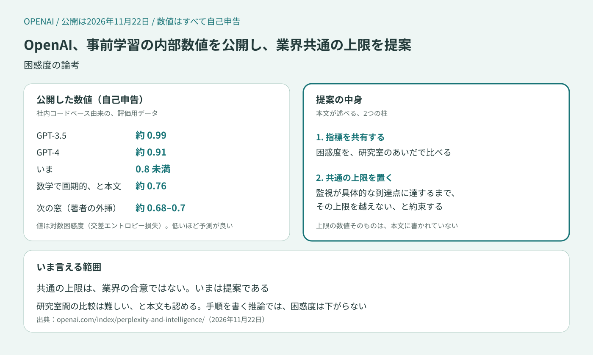

PM・エンジニア向け
OpenAI、
事前学習の
内部数値を公開し、
業界共通の
上限を提案困惑度の論考
OpenAIのチーフサイエンティストが、事前学習の進み具合を示す社内の数値を公開し、業界共通の上限を置こうと提案しました。公開日は2026年11月22日です。数値はすべて自己申告です。上限を越えてよいのは監視する力が具体的な到達点に達してからです。上限の数値そのものは本文にありません。
公開：2026年11月22日 / 数値はすべて自己申告（社内の評価用データ）

2026年11月22日に公開した、事前学習の進み具合を表す社内の数値（自己申告）と、指標の共有および共通の上限という提案の中身を示す図。上限の数値は本文になく、いまは業界の合意ではないことを示す。">公開したのは事前学習の進み具合を表す社内の数値です（自己申告）。提案は指標を共有し、監視が具体的な到達点に達するまで越えない共通の上限を置くことです。上限の数値そのものは本文にありません。
事前学習の内部数値を、
OpenAIが公開した
一次：2026年11月22日 / 著者：Jakub Pachocki（OpenAIチーフサイエンティスト）
2026年11月22日、OpenAIは「Perplexity and Intelligence」を公開しました。
事前学習の進み具合を、内部の数値で示した文章です。
事前学習とは、大量の文章で、モデルの土台を先に訓練することです。
本文が見る指標は「困惑度」（perplexity）です。次の単語を、平均してどれだけ正しく予測できるかを表します。低いほど、予測が良い、と本文は説明しています。
OpenAIが実際に追っているのは、その対数です。交差エントロピー損失とも呼びます。
数値の対象は、GPT-3.5以降に使っている、社内コードベース由来の評価用データです。固定したスナップショット上の値、と注記されています。
公開は、競合にいまの位置がわかる、と著者も書いています。
それでも、安全の措置を業界で共有する方が急務だ、と判断した、と本文にあります。
著者本人のX投稿は、2026年11月22日17:03（UTC）、日本時間では11月23日2:03です。
2026年11月24日8:14（日本時間）の取得では、表示9,791,888、いいね13,488、リポスト1,496でした。これは話題の大きさの根拠であり、数値の正しさを裏付けるものではありません。
公開したのは、OpenAI内部の事前学習の数値です。
数値は、すべて自己申告です。
公開された数値は、
すべて自己申告
出典：OpenAIの文章 / 社内の評価用データ（固定スナップショット）
| 時点 | 対数困惑度 | 本文が述べる能力 |
|---|---|---|
| GPT-3.5 | 約 0.99 | 滑らかな会話ができた。当初のChatGPTの土台になった |
| GPT-4 | 約 0.91 | 手順を文章で書かせる推論を、うまく使えるようになった、と本文 |
| いま | 0.8 未満 | サイバーセキュリティと数学で、変革的な能力が出た |
| 数学の評価で | 約 0.76 | 未解決問題に対し、画期的な結果を出し始めた |
| これからの窓 | 約 0.68–0.7 | さらに変革的な能力が出る、という外挿。中身は不明 |
「約 0.76」は、いまの「0.8 未満」の内側にある、ひとつの到達点です。
別の製品名ではありません。本文は、1年以上、数学の未解決問題をモデルに出してきた、と書いています。約0.76のモデルに上げたところから、画期的な結果が出始めた、としています。
約0.68から0.7の窓は、最近の進度からの外挿です。
そこで何が出るかは、著者にもわからない、と本文は明記しています。いまの試験では測っていない可能性もある、とも書いています。
これらの能力が、その数値で必ず出る、と事前に分かっていたわけではない、と本文は強調しています。
ひとつの指標が進んだ結果として、後から見えた能力だ、という書き方です。
値は、OpenAIが追っている主データセット上の自己申告です。
独立した測定ではありません。研究室が違えば、評価データも学習データの混ぜ方も違います。
提案は、指標の共有と、
共通の上限の2つ
本文の提案 / 上限の数値そのものは、本文にない
文章の主張は、困惑度（または同じ意味の交差エントロピー損失）を、開発者同士で比べ、安全の共通基準に使う指標にしよう、というものです。
内部数値の公開は、その第一歩だ、と本文は位置づけています。
- 指標を共有する。困惑度を、研究室のあいだで比べられるものにする。安全の共通基準にも使う。
- 共通の上限を置く。困惑度など、研究室をまたいで追える指標に基づく上限を決める。開発者は、それを越えない、と約束する。越えてよいのは、AIの振る舞いを理解し監視する力が、具体的な到達点に達してから。例として、手順を文章で書かせて監視する方法（CoTモニター）の後継が挙がっています。
- 使い始める前に、評価の規範をそろえる。そのようなモデルの評価の仕方と、安全ケースのレッドチーム（攻撃する側の視点で穴を探すこと）の共通の規範。公開の基準も含む。
- 一度きりで終わらせない。最初の上限と、それを越える条件を業界の標準にし、その先の上限と開発のペースを決める共通の枠組みにつなげたい、と本文は書いています。
置くのは「共通の上限」です。
その上限の数値そのものは、本文に書かれていません。
いまは提案であり、業界の合意ではありません。
この指標だけでは、
足りないと本文も書く
本文が自ら挙げる、4つの課題
- 研究室のあいだで、そのまま比べにくい。評価データと、学習データの混ぜ方が、開発者ごとに違う。今回の数字は、OpenAIが追っている主データセット上の値です。比べ方は、これから透明性の目標を置けば見つけられる、と本文は述べています。
- 現場の作業の点ではない。困惑度は、人が気にしている個別の仕事そのものには対応しません。見る理由は、これが進むと、新しい能力が出やすい、という考え方です。
- 事前学習以外の進歩は、入らない。とくに、手順を文章で書かせる推論（chain-of-thought）は、能力を大きく上げるが、モデルが達した困惑度は下がらない、と本文は書いています。
- 下限が分からない。損失が0になる（データを完全に予測できる）とは、考えていない、と本文は書いています。データの本来の予測しにくさは不明です。下限に近づくと、見かけの進みは遅くなり、小さな改善が、より大きな能力の飛躍に対応しうる、とも述べています。
公開された数値は、土台の進みを見る材料です。
あとから引き出した能力は、この指標には出ない、と本文は言っています。
エンジニアとPMにとって、
何が変わるか
一次の記述からの読み取り（業界の決定ではありません）
いま分かること
OpenAIについては、事前学習の進みを、時系列の数値で見る材料が公開されました。ただし自己申告であり、独立した測定ではありません。
まだ決まっていないこと
共通の上限の数値も、それを越えてよい条件も、本文には具体値がありません。他社が乗るかも、決まっていません。
新しいモデルの「総合点」だけでは、土台（事前学習）の進みと、あとから引き出した能力の違いが見えにくい、と本文は述べています。
後者の例が、手順を文章で書かせる推論です。能力は大きく上がるが、困惑度は下がらない、と本文にあります。
提案が通れば、次の世代の開発は、監視が具体的な到達点に達するまで、共有した数値の手前で止まる、ということになります。
これは提案であり、いまの約束ではありません。計画に織り込むなら、「決まった規則」ではなく、「そういう案が出ている」として扱う必要があります。
本文は、いま主流の監査の効きが、さらに弱くなることも予想しています。
監視の例として挙がっているのは、手順の文章を読む方法（CoTモニター）の後継です。
2027年には、事前学習の算法そのものでも、数学で見たような急な進展がありうる、というのが著者の見通しです。
本文の英語は conceivably（ありうる）です。確定した予定ではありません。
変わる可能性があるのは、
次の世代を「いつまで、どこまで」使えるか、の前提です。
いま確定しているのは、内部数値を公開したことまでです。
いま言える範囲と、
言えないこと
数値は、すべてOpenAIの自己申告です。対象は、社内コードベース由来の評価用データです。
他社のモデルと、同じものさしで並ぶ数字ではありません。本文も、研究室間の比較は難しい、と認めています。
約0.68から0.7の窓で何が出るかは、著者もわからない、と明記しています。
いまの試験では測っていない可能性もある、とも書いています。能力の中身を、この資料で補うことはしません。
注5では、2026年の損失の曲線に急な加速が見える、と述べています。
著者は、主因を長期の研究と計算資源だとし、自動化の寄与はより小さい部分だ、としています。ごく最近のモデルでは、AIからの設計への寄与が、意味のある水準になった、とも注記しています。これも自己申告です。
「完全な再帰的自己改善」（人の監督なしで、開発全体が自動化される状態）は、人の制御を保つために避けるべきだ、と本文は書いています。
ただし今回の提案は、その状態そのものを禁じる規則ではありません。事前学習の指標に、共通の上限を置く案です。
著者のX投稿の反応数は、話題の大きさの根拠です。
2026年11月24日8:14（日本時間）取得。表示9,791,888、いいね13,488、リポスト1,496。数値の独立検証ではありません。
言えるのは、公開された自己申告の数値と、
共通の上限という提案の中身までです。
上限の数値も、他社の同意も、まだありません。
自社の合格基準は
別に持ち、
提案は提案として追う
日本の開発チーム向けの読み替え（一次の方針そのものではありません）
- 新しいモデルを入れる前に、「何ができれば合格か」を、自社の仕事で先に書く。公開ベンチマークや、今回の内部数値だけに頼らない。
- 「土台の進歩」と「あとから引き出した能力」を、分けて見る。後者は困惑度に出ない、と本文は言っています。
- 業界の上限案は、いまは提案として追う。他社が乗るか、上限の数値と「越えてよい条件」が決まるかを見る。
- 手順の文章を読む監視が弱くなる、という著者の予想があるなら、自社の監査を見直す。ログ、拒否、人の確認を、モデルの世代が上がる前提で確認する。
内部の数値は、公開された。
共通の上限は、
まだ提案である。
出典と確認範囲
- OpenAI：Perplexity and Intelligence（Jakub Pachocki）
ページ表記 November 22, 2026。本資料の数値・提案・課題・著者の見通しは、この本文と注に限る。対数困惑度（交差エントロピー損失）は、社内コードベース由来の評価用データ（GPT-3.5以降、固定スナップショット）上の自己申告。上限の数値そのものは記載なし。 - Jakub Pachocki（@merettm）のX投稿
投稿 2026-11-22 17:03 UTC＝日本時間11月23日 2:03。反応数は 2026年11月24日 8:14（日本時間）取得。表示 9,791,888、いいね 13,488、リポスト 1,496。話題の大きさの根拠であり、数値の独立検証ではない。
確認日：2026年11月24日（日本時間）。一次ページを再取得し、本文の数値と提案を照合した。図表から読み取った値は使っていない。本文にない能力の中身は書いていない。